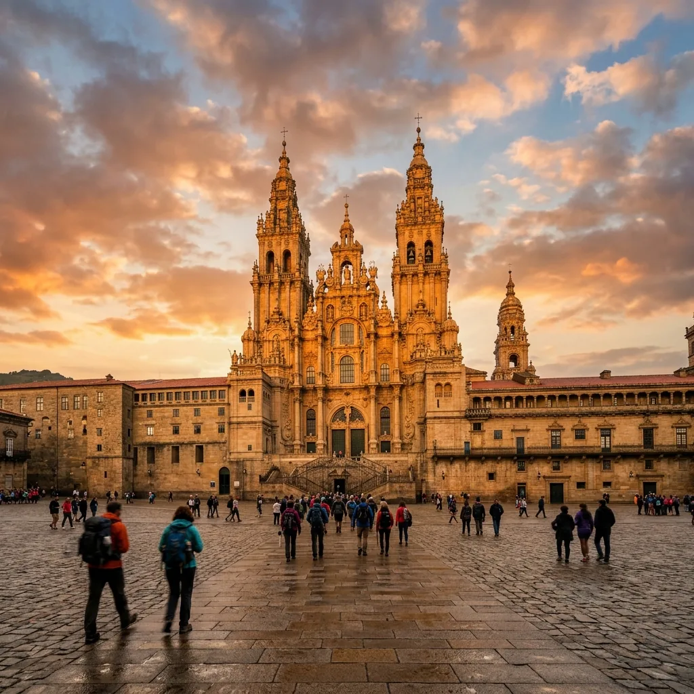

8 pilgrimage routes
From the classic French Way to the most remote and authentic routes. Find the path that suits you best.
Personal guidance
Tell us your fitness level, available time, and preferences. Our experts will guide you with no obligation.
If you have less than 10 days, the English Way or the final stages of the Portuguese Way are your best option.
The French Way or the Portuguese Way are the most recommended for first-time pilgrims.
The Primitive Way or the Via de la Plata are for those seeking a physical challenge and maximum solitude.